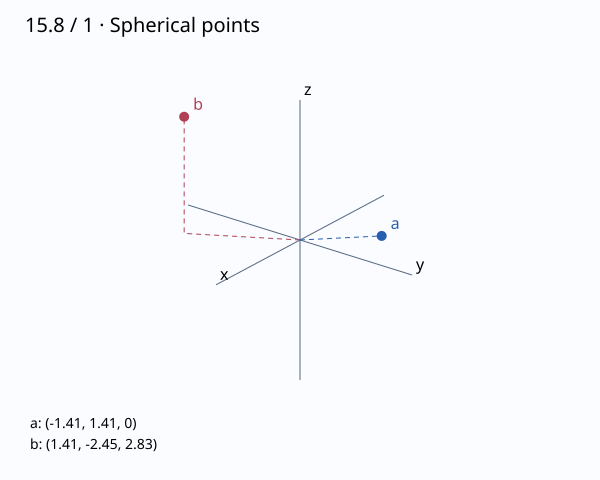

문제 요약
구면좌표 점을 표시하고 직교좌표로 바꾸어라. (a) \(\left( 2, \ \frac{3 \pi}{4}, \ \frac{\pi}{2}\right)\), (b) \(\left( 4, \ - \frac{\pi}{3}, \ \frac{\pi}{4}\right)\)
- a
- b

힌트. \(\rho^2=x^2+y^2+z^2\)와 세 좌표변환식을 사용한다.
해설.
(a) \[(x,y,z)=(\rho\sin\phi\cos\theta,\rho\sin\phi\sin\theta,\rho\cos\phi)=\left( - \sqrt{2}, \ \sqrt{2}, \ 0\right)\]
(b) \[(x,y,z)=(\rho\sin\phi\cos\theta,\rho\sin\phi\sin\theta,\rho\cos\phi)=\left( \sqrt{2}, \ - \sqrt{6}, \ 2 \sqrt{2}\right)\]
φ는 양의 z축에서 잰 각이며 θ는 xy-평면에서의 방위각이다. φ의 범위는0부터π이다.
최종 답. \[(a)\ \left( - \sqrt{2}, \ \sqrt{2}, \ 0\right),\quad(b)\ \left( \sqrt{2}, \ - \sqrt{6}, \ 2 \sqrt{2}\right)\]
검산·주의점. 역변환으로 원래 점을 복원하고 θ의 사분면과 z의 부호를 확인했다.
Problem summary
Plot the spherical-coordinate points and find rectangular coordinates. (a) \(\left( 2, \ \frac{3 \pi}{4}, \ \frac{\pi}{2}\right)\), (b) \(\left( 4, \ - \frac{\pi}{3}, \ \frac{\pi}{4}\right)\)
- a
- b
Hint. Use the three coordinate transformations and \(\rho^2=x^2+y^2+z^2\).
Solution.
(a) \[(x,y,z)=(\rho\sin\phi\cos\theta,\rho\sin\phi\sin\theta,\rho\cos\phi)=\left( - \sqrt{2}, \ \sqrt{2}, \ 0\right)\]
(b) \[(x,y,z)=(\rho\sin\phi\cos\theta,\rho\sin\phi\sin\theta,\rho\cos\phi)=\left( \sqrt{2}, \ - \sqrt{6}, \ 2 \sqrt{2}\right)\]
φ is measured from the positive z-axis; θ is the azimuth in the xy-plane. The range of φ is0 toπ.
Final answer. \[(a)\ \left( - \sqrt{2}, \ \sqrt{2}, \ 0\right),\quad(b)\ \left( \sqrt{2}, \ - \sqrt{6}, \ 2 \sqrt{2}\right)\]
Check and conditions. Inverse conversion recovers the original point; the θ quadrant and sign of z were checked.